Introdução
O Windows 10 é um sistema operacional desenvolvido pela Microsoft. Neste tutorial, você aprenderá como preparar um pendrive bootável e realizar a instalação do Windows 10.
1. O que você precisa antes de começar
Antes de iniciar a instalação, separe os seguintes itens:
- Um computador compatível com o Windows 10.
- Um pendrive com pelo menos 8 GB de capacidade.
- Uma imagem ISO legítima do Windows 10.
- O programa Rufus para criar o pendrive bootável.
- Uma chave de ativação válida, quando necessária.
- Um backup dos seus arquivos importantes.
- Conexão com a internet, se possível.
2. Baixar o Rufus
O Rufus é utilizado para criar pendrives inicializáveis com os arquivos de instalação do Windows.
Acesse o site oficial:
Baixar o Rufus no site oficial

3. Criar o pendrive bootável
- Conecte o pendrive ao computador.
- Abra o programa Rufus.
- Selecione o pendrive correto em "Dispositivo".
- Clique em "Selecionar".
- Escolha a ISO do Windows 10.
- Confira as configurações do particionamento.
- Clique em "Iniciar".
- Aguarde até a criação do pendrive terminar.
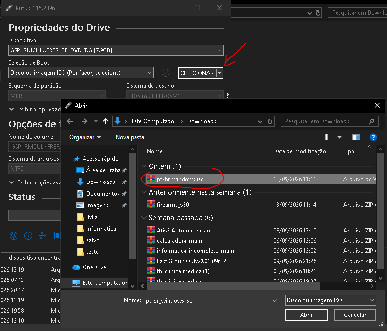
4. Iniciar o computador pelo pendrive
Depois de preparar o pendrive, você deverá iniciar o computador utilizando o dispositivo USB.
- Desligue o computador.
- Conecte o pendrive bootável.
- Ligue o computador.
- Abra o Boot Menu ou entre na BIOS.
- Selecione o pendrive USB.
- Pressione Enter para iniciar.
As teclas de acesso podem variar conforme o fabricante. Algumas teclas comuns são F12, F9, F11, Esc e Del.
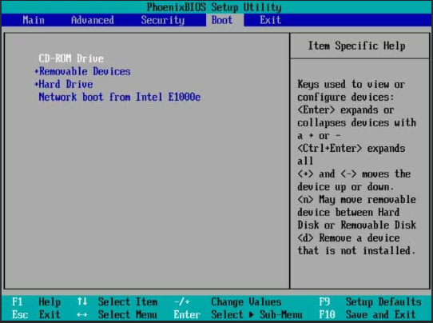
5. Iniciar a instalação do Windows 10
Após iniciar pelo pendrive, a tela de instalação do Windows 10 será apresentada.
- Selecione o idioma de instalação.
- Escolha o formato de hora e moeda.
- Selecione o idioma do teclado.
- Clique em "Avançar".
- Clique em "Instalar agora".
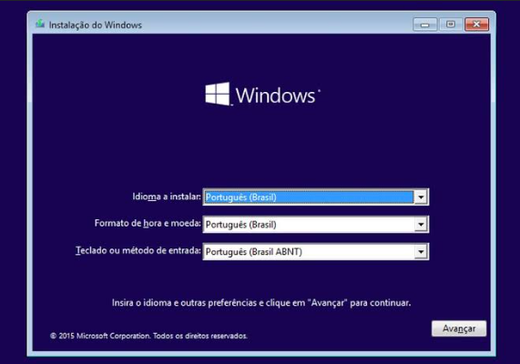
6. Inserir a chave do produto
O instalador poderá solicitar uma chave de produto do Windows. Se você já possui uma chave válida, poderá inseri-la.
Dependendo do caso, também poderá existir uma opção para continuar sem inserir a chave naquele momento.
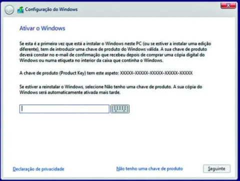
7. Escolher a edição do Windows
Se solicitado, selecione a edição correspondente à licença do seu computador, como Windows 10 Home ou Windows 10 Pro.
- Confira a edição desejada.
- Selecione a opção correta.
- Clique em "Avançar".
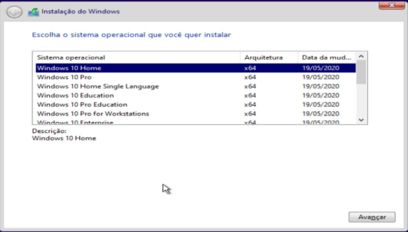
8. Aceitar os termos de licença
Leia os termos de licença apresentados pelo instalador. Marque a opção de aceitação e clique em "Avançar".
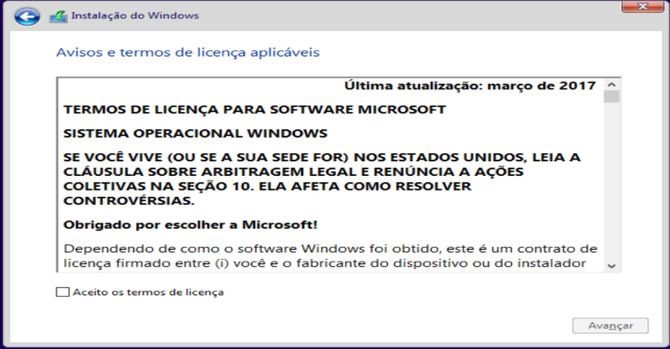
9. Escolher o tipo de instalação
Atualização
A opção de atualização tenta manter arquivos, configurações e programas compatíveis do sistema anterior.
Personalizada: instalar somente o Windows
A instalação personalizada permite selecionar a partição onde o Windows 10 será instalado. É uma opção utilizada frequentemente em instalações limpas.
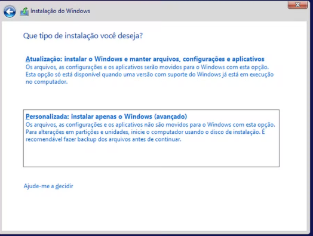
10. Selecionar e formatar a partição
- Selecione o disco ou a partição desejada.
- Confira o tamanho e as informações exibidas.
- Se necessário, clique em "Formatar".
- Confirme a operação.
- Clique em "Avançar".
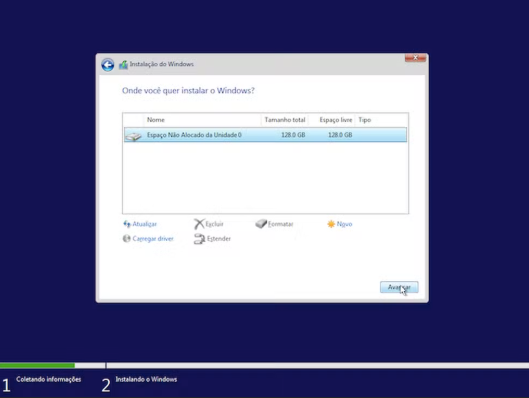
11. Aguardar a instalação dos arquivos
O instalador começará a copiar os arquivos do Windows 10 para o disco rígido ou SSD.
O computador poderá reiniciar automaticamente durante o processo de instalação.
- Não desligue o computador durante a instalação.
- Mantenha o computador conectado à energia.
- Remova o pendrive se o computador voltar a iniciar pelo USB.
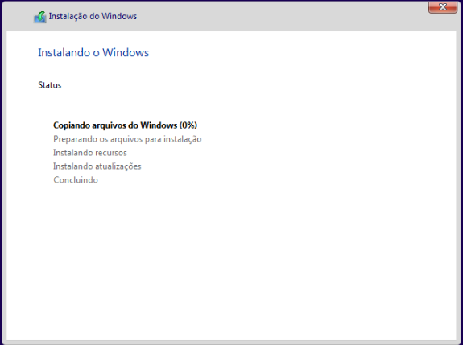
12. Configuração inicial do Windows 10
Depois da instalação, o Windows 10 apresentará algumas opções de configuração inicial.
- Selecione a região.
- Configure o layout do teclado.
- Adicione outro layout, se necessário.
- Conecte-se à internet, quando disponível.
- Configure uma conta de usuário.
- Crie uma senha ou PIN, se solicitado.
- Configure as opções de privacidade.
- Aguarde o carregamento da área de trabalho.
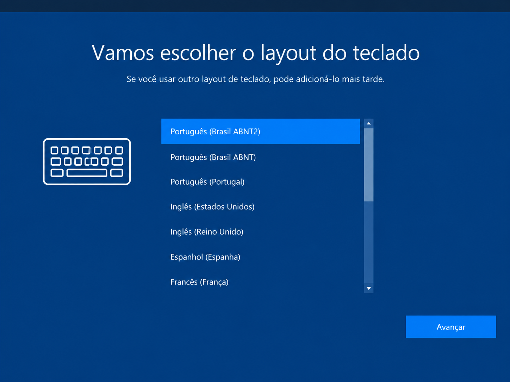
13. Instalar os drivers
Após concluir a instalação, verifique se todos os componentes do computador estão funcionando corretamente.
Instale ou confira os seguintes drivers:
- Driver do chipset.
- Driver de vídeo.
- Driver de áudio.
- Driver de rede.
- Drivers de USB e outros dispositivos.
Sempre que possível, baixe os drivers diretamente do site oficial do fabricante.
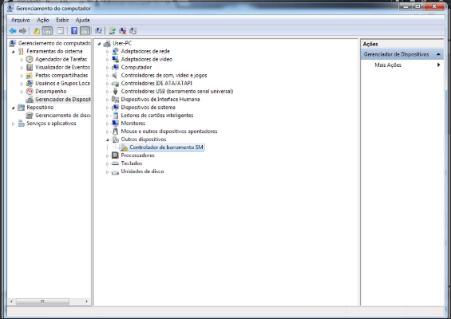
14. Verificar as configurações do sistema
Depois de instalar os drivers, confira algumas configurações:
- Resolução e funcionamento da tela.
- Conexão com a internet.
- Funcionamento do áudio.
- Reconhecimento de teclado e mouse.
- Data, hora e fuso horário.
- Ativação do Windows, quando aplicável.
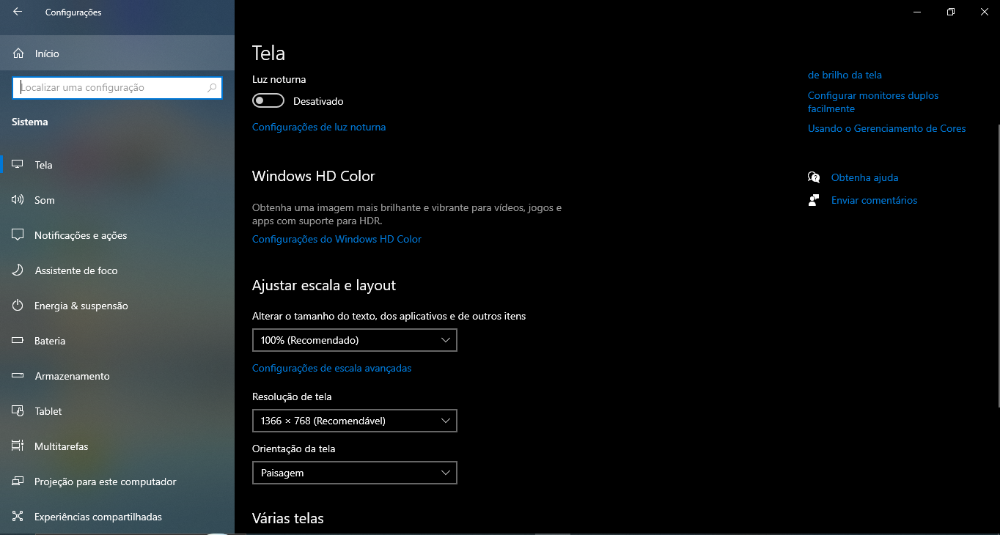
15. Conclusão
Após concluir a instalação, configurar o sistema e verificar os drivers, o Windows 10 estará pronto para ser utilizado.
Recomendações finais
- Faça backup dos seus arquivos antes da instalação.
- Utilize uma ISO legítima do Windows 10.
- Use uma chave de ativação válida.
- Evite programas baixados de sites desconhecidos.
- Considere migrar para um sistema operacional com suporte.
- Mantenha seus dados pessoais protegidos.